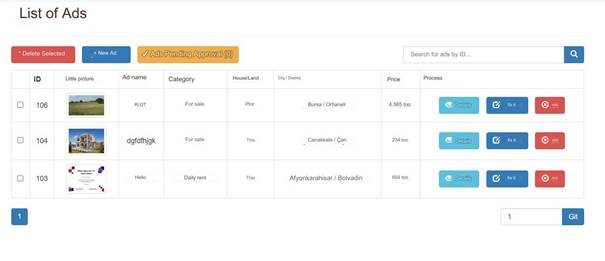
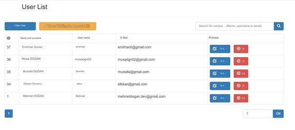
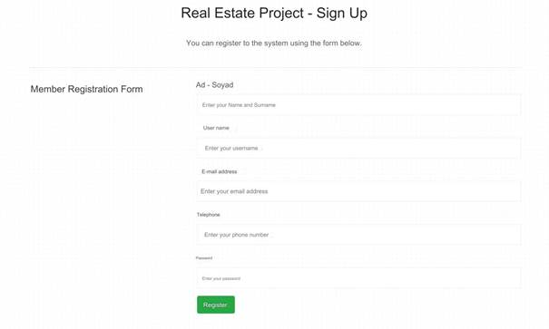
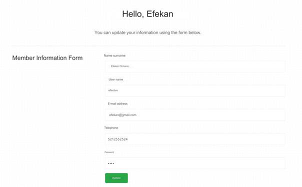
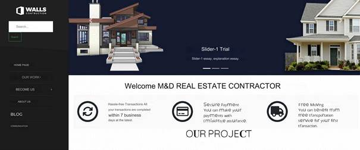
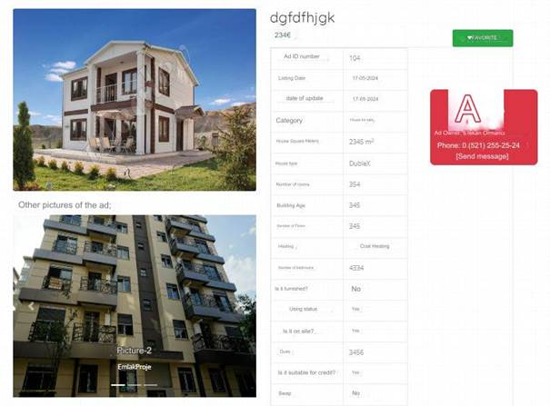

İNTERNET PROGRAMCILIĞI EMLAK & MÜTEAHHİT SİTESİ
Bu proje, emlak ve müteahhitlik sektörüne yönelik modern bir web platformu geliştirmeyi amaçlamaktadır. Site, kullanıcıların gayrimenkul arama ve inceleme süreçlerini kolaylaştırmak, müteahhitler ile potansiyel müşteriler arasında bir köprü oluşturmak için tasarlanmıştır.
Özellikler:
- Kullanıcı Dostu Arayüz: Basit ve sezgisel bir tasarıma sahip olan site, kullanıcıların kolayca gezinebileceği ve ihtiyaçlarına hızla ulaşabileceği bir arayüz sunar.
- Detaylı Emlak Bilgileri: Her ilan, detaylı fotoğraflar, açıklamalar, fiyat bilgileri ve konum bilgilerini içerir. Böylece kullanıcılar, aradıkları gayrimenkul hakkında kapsamlı bilgi sahibi olabilirler.
- İnteraktif Harita: Kullanıcılar, ilgilendikleri gayrimenkulleri harita üzerinde görüntüleyebilir, çevresindeki önemli noktaları ve ulaşım seçeneklerini inceleyebilirler.
- Müteahhit Profilleri: Müteahhitler, projelerini ve referanslarını sergileyebilecekleri özel profiller oluşturabilirler. Bu profiller, potansiyel müşterilere güven ve bilgi sağlar.
- İletişim ve Geri Bildirim: Kullanıcılar, ilgilendikleri emlak ilanları veya müteahhitler ile doğrudan iletişime geçebilir, sorularını sorabilir ve geri bildirimde bulunabilirler.
- Mobil Uyumluluk: Site, mobil cihazlarla uyumlu olarak tasarlanmıştır, bu sayede kullanıcılar her yerden rahatça erişim sağlayabilirler.
Bu site, emlak ve müteahhitlik sektöründe dijitalleşmeyi teşvik ederken, kullanıcıların daha verimli ve etkili bir şekilde aradıkları bilgilere ulaşmalarını sağlar.

Şekil 1 Admin Paneline giriş yapmak için kullanılan giriş ekranı
Bu şekil, admin paneline erişim sağlamak için kullanılan giriş ekranını göstermektedir. Giriş ekranı, yöneticilerin sisteme güvenli bir şekilde giriş yapmalarını sağlamak amacıyla tasarlanmıştır. Kullanıcı adı ve şifre alanları, yetkili kullanıcıların kimlik doğrulama bilgilerini girmelerine olanak tanır. Giriş butonu ise doğru kimlik bilgileri girildikten sonra admin paneline erişimi sağlar. Bu ekran, yetkisiz erişimleri engellemek için güvenlik önlemleriyle desteklenmiştir ve kullanıcıların yönetim paneline kolayca ulaşmalarını hedefler.

Şekil 2 Admin panel index.php
Bu şekil, admin panelinin ana sayfası olan index.php
dosyasını göstermektedir. Admin paneline başarılı bir girişten sonra,
yöneticiler bu sayfa aracılığıyla çeşitli yönetim işlevlerine erişim
sağlayabilirler. Ana sayfa, kullanıcı dostu bir arayüze sahip olup, sistemin
genel durumu, istatistikler ve önemli bildirimler gibi bilgileri özet halinde
sunar. Ayrıca, buradan kullanıcı yönetimi, içerik düzenleme, ayarlar ve diğer
yönetim görevlerine hızlı erişim sağlanabilir. Bu sayfa, yönetim süreçlerini
etkin ve verimli bir şekilde yönetmek için gerekli araç ve bilgileri bir arada
sunar.

Şekil 3 Header kısmı
Bu şekil, admin panelinin üst bilgi (header) kısmını göstermektedir. Header, tüm sayfalarda yer alan ve kullanıcıların kolayca erişebileceği navigasyon ve bilgi alanıdır. Bu bölüm genellikle şu unsurları içerir:
- Logo: Sol üst köşede yer alan site veya şirket logosu.
- Navigasyon Menüsü: Ana sayfa, kullanıcı yönetimi, içerik yönetimi gibi önemli yönetim işlevlerine hızlı erişim sağlayan menü bağlantıları.
- Bildirimler: Yeni mesajlar, bildirimler veya uyarılar gibi önemli güncellemeleri gösteren simgeler.
- Kullanıcı Profili: Sağ üst köşede, yöneticinin adı veya profil resmi ile birlikte hesap ayarlarına ve çıkış yapma seçeneğine erişim sağlayan kullanıcı menüsü.
Header kısmı, kullanıcı deneyimini iyileştirmek ve yönetim görevlerine hızlı erişim sağlamak amacıyla tasarlanmıştır.

Şekil 4 Yayonlanan İlanların Listesi
Bu şekil, admin panelinde yer alan ve sistem tarafından onaylanmış emlak ilanlarının bir listesini göstermektedir. Bu liste genellikle şu bilgileri içerebilir:
· Emlak İlanı ID: Her ilana benzersiz bir kimlik numarası atanır.
· Başlık: İlanın başlığı veya açıklaması.
· Tarih: İlanın yayımlanma veya güncellenme tarihi.
· Durum: İlanın mevcut durumu (onaylı, pasif, vs.).
· İşlem Seçenekleri: İlan üzerinde yapılacak işlemler için düzenleme, silme gibi seçenekler.
Bu liste, adminin onay sürecini yönetmesine ve sistemdeki ilanları kontrol etmesine olanak tanır. İlanların detaylarına erişmek ve gerektiğinde düzenlemeler yapmak için bu liste kullanılabilir.

Şekil 5 Yayınlanan Projelerin Listesi
Bu şekil, admin panelinde yer alan ve yayınlanmış projelerin bir listesini göstermektedir. Bu liste genellikle şu bilgileri içerebilir:
- Proje ID: Her projeye benzersiz bir kimlik numarası atanır.
- Proje Adı: Projenin adı veya başlığı.
- Müteahhit: Projeyi gerçekleştiren müteahhit veya firma.
- Proje Durumu: Projenin mevcut durumu (devam ediyor, tamamlandı, vs.).
- Başlangıç Tarihi: Projenin başlangıç tarihi.
- Bitiş Tarihi: Projenin bitiş tarihi.
- İşlem Seçenekleri: Proje üzerinde yapılacak işlemler için düzenleme, silme gibi seçenekler.
Bu liste, adminin yayınlanmış projeleri izlemesine ve gerektiğinde düzenlemeler yapmasına olanak tanır. Projelerin detaylarına erişmek ve durumlarını güncellemek için bu liste kullanılabilir.

Şekil 6 Onay İşlemleri
Sisteme üye olan kullanıcıların üyeliklerini onaylama işlemlerinin olduğu kısmı temsil eder. Ayrıca yine üye olan kullanıcıların yayınlamak istediği ilanların onaylanması ve yayınlanmasını sağlar.

Şekil 7 Projeler ve İlanlar'a ait kategorileri listeler
Bu şekil, projeler ve emlak ilanları gibi öğelerin ait olduğu kategorilerin bir listesini göstermektedir. Bu liste genellikle şu bilgileri içerebilir:
- Kategori ID: Her kategoriye benzersiz bir kimlik numarası atanır.
- Kategori Adı: Kategorinin adı veya açıklaması.
- Öğe Türü: Kategorinin projeler mi yoksa emlak ilanları gibi öğeleri mi temsil ettiği.
- Alt Kategoriler: Eğer varsa, kategorinin alt kategorileri.
Bu liste, adminin kategorileri yönetmesine ve yeni kategoriler eklemesine olanak tanır. Her kategori, belirli türdeki projeleri veya ilanları gruplandırmak için kullanılabilir.

Şekil 8 Kullanıcıları Listeleme Ekranı
Bu şekil, admin panelinde yer alan ve sisteme kayıtlı kullanıcıların bir listesini gösteren ekranı temsil etmektedir. Bu liste genellikle şu bilgileri içerebilir:
- Kullanıcı ID: Her kullanıcıya benzersiz bir kimlik numarası atanır.
- Kullanıcı Adı: Kullanıcının adı veya kullanıcı adı.
- E-posta Adresi: Kullanıcının e-posta adresi.
- Kayıt Tarihi: Kullanıcının sisteme kaydolduğu tarih.
- Son Giriş Tarihi: Kullanıcının en son sisteme giriş yaptığı tarih.
- Kullanıcı Rolü: Kullanıcının rolü veya yetkileri (admin, editör, vs.).
- İşlem Seçenekleri: Kullanıcı üzerinde yapılacak işlemler için düzenleme, silme gibi seçenekler.
Bu liste, adminin kullanıcıları izlemesine ve gerektiğinde düzenlemeler yapmasına olanak tanır. Kullanıcıların detaylarına erişmek ve rol veya yetkilerini güncellemek için bu liste kullanılabilir.
USER SAYFASI İŞLEYİŞİ

Şekil 9 Sisteme Üye Olan Kullanıcıların Giriş Yapacağı Ekran
Bu şekil, sisteme üye olan kullanıcıların giriş yapacakları ekranı temsil etmektedir. Bu ekran genellikle şu bileşenleri içerir:
- Kullanıcı Adı veya E-posta Alanı: Kullanıcı adı veya kayıtlı e-posta adresi girilir.
- Şifre Alanı: Kayıtlı şifre girilir.
- Beni Hatırla Seçeneği: Oturumunuzu hatırlamak için bir seçenek.
- Giriş Yap Butonu: Bilgiler doğru ise sisteme giriş yapmayı sağlayan buton.
Bu ekran, sisteme üye olan kullanıcıların kimlik doğrulamasını sağlar ve giriş yapmalarına olanak tanır. Hatalı giriş denemeleri durumunda uyarı mesajları da gösterebilir.

Şekil 10 Sisteme Kayıt olma sayfası
Bu şekil, kullanıcıların sisteme kayıt olabilecekleri bir sayfayı temsil etmektedir. Bu sayfa genellikle şu bileşenleri içerir:
- Ad ve Soyad Alanı: Kullanıcının adını ve soyadını girmesi için alan.
- E-posta Adresi Alanı: Kullanıcının kayıtlı e-posta adresini girmesi için alan.
- Şifre Alanı: Kullanıcının sisteme giriş yaparken kullanacağı şifreyi belirlemesi için alan.
- Şifre Tekrar Alanı: Şifrenin doğrulanması için tekrar girilmesi gereken alan.
- Kayıt Ol Butonu: Bilgilerin doğru ve eksiksiz girilmesi durumunda sisteme kayıt olmayı sağlayan buton.
Bu sayfa, yeni kullanıcıların sisteme kayıt olmasını sağlar. Genellikle kayıt sırasında e-posta doğrulaması gibi güvenlik adımları da uygulanabilir.

Şekil 11 Kullanıcının Profil Ekranı
Bu şekil, kullanıcının kendi profilini görüntüleyebileceği veya düzenleyebileceği bir ekranı temsil etmektedir. Bu ekran genellikle şu bileşenleri içerir:
- Kullanıcı Bilgileri: Ad, soyad, e-posta adresi gibi kullanıcı bilgilerinin görüntülendiği alanlar.
- Profil Resmi: Kullanıcının profil resmini görüntüleyebileceği veya değiştirebileceği alan.
- Şifre Değiştirme Alanı: Kullanıcının şifresini değiştirebileceği alan.
- Diğer Ayarlar: Dil seçimi, tema seçimi gibi diğer kullanıcı tercihlerini değiştirebileceği alanlar.
- Kaydet veya Güncelle Butonu: Yapılan değişiklikleri kaydetmek veya güncellemek için kullanılan buton.
Bu ekran, kullanıcının kendi profil bilgilerini güncelleyebileceği ve hesap ayarlarını yönetebileceği bir arayüz sunar

Şekil 12 kullanıcılar arasında mesajlaşma : Alınan Mesajlar
Bu şekil, bir kullanıcının aldığı mesajları görüntüleyebileceği bir ekranı temsil etmektedir. Bu ekran genellikle şu bileşenleri içerir:
- Gönderici Bilgileri: Mesajı gönderen kullanıcının adı veya kullanıcı adı.
- Mesaj İçeriği: Gönderilen mesajın içeriği.
- Gönderme Tarihi/Zamanı: Mesajın gönderildiği tarih ve zaman bilgisi.
- Yanıtla veya Sil Butonları: Mesaja yanıt verme veya silme gibi işlemleri gerçekleştirmek için butonlar.
Bu ekran, kullanıcının aldığı mesajları görüntülemesini ve gerekli işlemleri yapmasını sağlar. Genellikle kullanıcılar, mesajlarını yanıtlayabilir, silerek arşivleyebilir veya yeni mesaj oluşturabilirler.

Şekil 13 kullanıcılar arasında mesajlaşma : Gönderilen Mesajlar
Bu şekil, bir kullanıcının gönderdiği mesajları görüntüleyebileceği bir ekranı temsil etmektedir. Bu ekran genellikle şu bileşenleri içerir:
- Alıcı Bilgileri: Mesajın gönderildiği kullanıcının adı veya kullanıcı adı.
- Mesaj İçeriği: Gönderilen mesajın içeriği.
- Gönderme Tarihi/Zamanı: Mesajın gönderildiği tarih ve zaman bilgisi.
- Yanıtla veya Sil Butonları: Mesaja yanıt verme veya silme gibi işlemleri gerçekleştirmek için butonlar.
Bu ekran, kullanıcının gönderdiği mesajları görüntülemesini ve gerekli işlemleri yapmasını sağlar.

Şekil 14 Kullanıcı İlan Verme Sayfası
Bu şekil, kullanıcıların sisteme ilan vermek için kullanabileceği bir sayfayı temsil etmektedir. Bu sayfa genellikle şu bileşenleri içerir:
- İlan Başlığı: İlanın başlığının girildiği alan.
- İlan İçeriği: İlanın detaylarının girildiği metin alanı.
- Fiyat Bilgisi: Eğer ilan bir ürün veya hizmet satışıyla ilgiliyse, fiyat bilgisinin girildiği alan.
- Fotoğraf Yükleme Alanı: İlan ile ilgili fotoğrafların yüklenebileceği alan.
- İlan Kategorisi Seçimi: İlanın hangi kategoriye ait olduğunu belirten seçim alanı.
- İlanı Yayımla Butonu: İlanın sisteme kaydedilip yayımlanmasını sağlayan buton.
Bu sayfa, kullanıcıların kolayca ilan verebileceği ve ilanlarını yayınlayabileceği bir arayüz sunar.

Şekil 15 Kullanıcının Kendi hesabından vermiş olduğu ve admin tarafından onaylanan ilanlar listesi
Bu şekil, bir kullanıcının kendi hesabından verdiği ve admin tarafından onaylanmış ilanların bir listesini göstermektedir. Bu liste genellikle şu bilgileri içerebilir:
- İlan ID: Her ilana benzersiz bir kimlik numarası atanır.
- İlan Başlığı: İlanın başlığı veya açıklaması.
- Onay Durumu: İlanın admin tarafından onaylanıp onaylanmadığını gösteren bilgi.
- İlan Tarihi: İlanın verildiği tarih.
- İşlem Seçenekleri: İlan üzerinde yapılacak işlemler için düzenleme, silme gibi seçenekler.
Bu liste, kullanıcının kendi verdiği ilanları takip etmesine ve gerektiğinde düzenlemeler yapmasına olanak tanır. Admin tarafından onaylanan ilanlar genellikle daha geniş bir kullanıcı kitlesine görünür hale gelir.

Şekil 16 Sitenin Önde gelen projelerin ve ilanların olduğu anasayfası
Bu şekil, sitenin ana sayfasını temsil etmektedir ve genellikle önde gelen projelerin ve ilanların listelendiği bir tasarıma sahiptir. Bu sayfa genellikle şu bileşenleri içerir:
- Slider veya Karusel: Öne çıkan projeler veya ilanların slayt şeklinde gösterildiği alan.
- Projelerin veya İlanların Listesi: Sayfanın alt kısmında önde gelen projelerin veya ilanların listelendiği bir bölüm.
- Filtreleme ve Sıralama Seçenekleri: Kullanıcıların projeleri veya ilanları filtrelemek veya sıralamak için kullanabilecekleri seçenekler.
Bu sayfa, kullanıcıların siteye giriş yaptıklarında önemli projeleri veya ilanları hızlıca görmelerini sağlar. Özellikle yeni kullanıcılara siteyi keşfetme ve ilanlara göz atma imkanı sunar.

Şekil 17 Sistemde Yayınlanmış olan İlanlar sayfası

Şekil 18 Gösterilen ilanların içerisinde seçilen ilanın adına tıklanıldığı zaman açılan sayfada görüntülenen detay sayfası
Bu şekil, sistemde yayınlanmış olan ilanların listelendiği bir sayfayı temsil etmektedir. Bu sayfa genellikle şu özellikleri içerebilir:
- Filtreleme Seçenekleri: Kullanıcıların ilanları fiyata, popülariteye veya kategoriye göre filtrelemesini sağlayan seçenekler.
- İlanların Listesi: Filtreleme sonucunda listelenen ilanların gösterildiği bölüm. Her ilan genellikle başlık, fiyat ve kısa açıklama gibi bilgilerle birlikte görüntülenir.
- Sıralama Seçenekleri: Kullanıcıların ilanları belirli bir kritere göre sıralamasını sağlayan seçenekler (örneğin, en yüksek fiyat, en düşük fiyat, en popüler ilanlar vs.).
- Sayfalama: Listelenen ilanların birden fazla sayfada gösterilmesi durumunda, kullanıcıların sayfalar arasında geçiş yapmasını sağlayan sayfalama öğeleri.
Bu sayfa, kullanıcıların sistemdeki ilanları daha kolay bulmalarını sağlar. Kullanıcılar istedikleri kriterlere göre filtreleme ve sıralama yaparak aradıkları ilanlara daha hızlı erişebilirler.